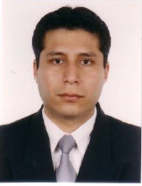

Hugo Guillermo Samanez Atoche 
Posición
Departamento
Organización


Posición
Departamento
Organización


Ingeniero de Sistemas de la Universidad Tecnológica del Perú, Diplomado Dirección de Programas Institucionales en ESAN. Técnico en computación e informática (CIMAS).
Con 13 años de experiencia trabajando en diferentes áreas de negocio como (Tributos, fiscalización, gobierno, comercio), trabajando como desarrollador senior de software, líder técnico, coordinador de proyecto de software. Expositor en las nuevas funcionalidades de implementadas a los usuarios finales. Experiencia y conocimientos en metodologías ágiles SCRUM. Mejora de procesos de TI basados en metodologías y modelos de referencia (ITIL). Especialista en Gestión de Proyectos bajo el enfoque PMI. Consultor de software en la creación de proyectos de desarrollo Web.
| Introducción a Linux como entorno de desarrollo de sistemas software. |
| Otros... |